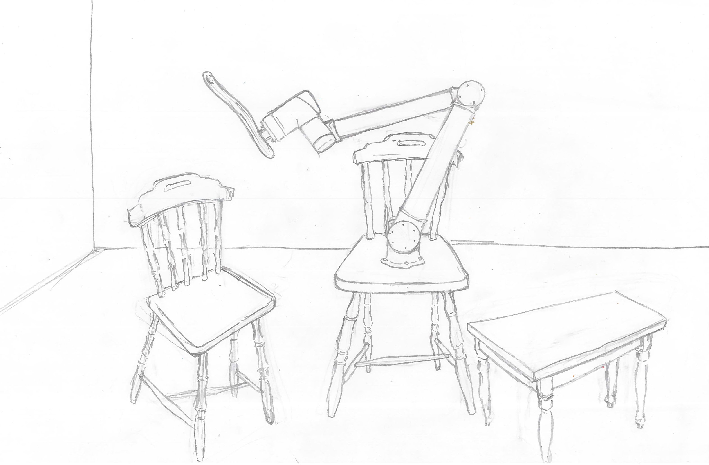
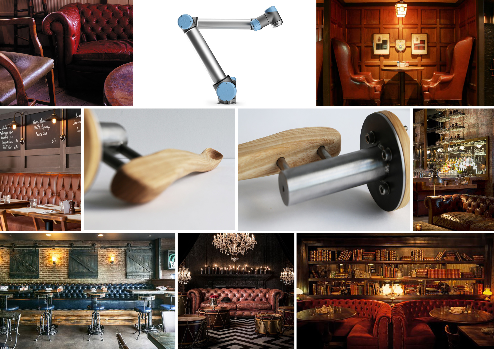
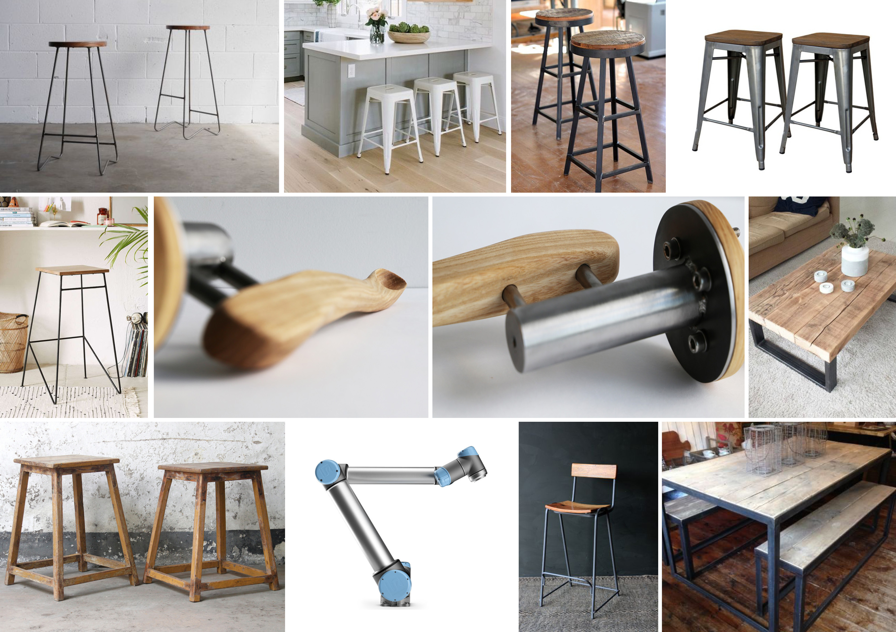
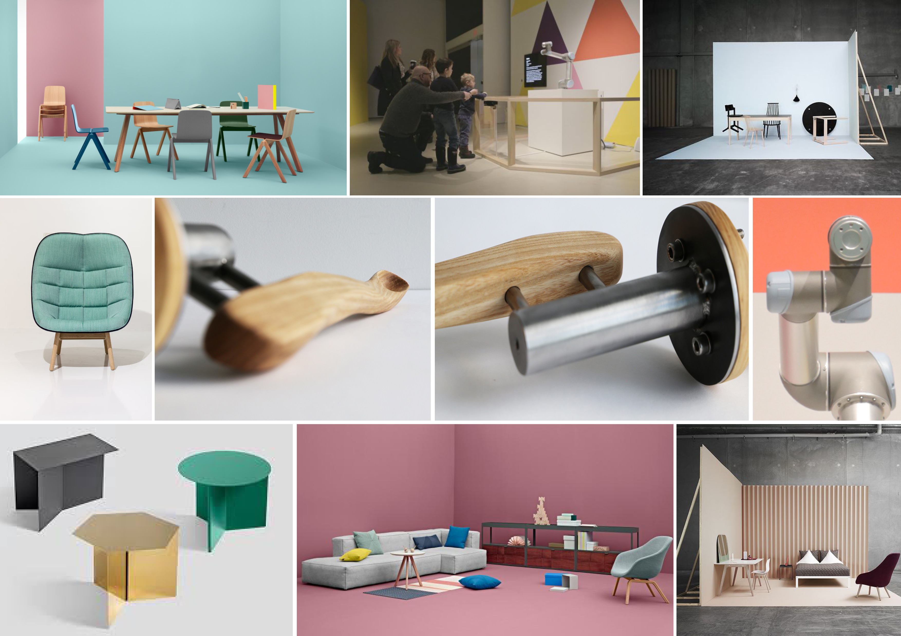

Summary of the week
This week was dedicated to preparing the stage with visual supporting material and working out the storyboard.
Setup drawing
The drawing shows the ideal final situation, where the robot is attached to the floor through some sort of metal work. On the chair the actor sits, while the tools are located on the coffee table upfront.
Stage design
In the effort of thinking about the mood of the movie, I made three moodboards of three different styles. The first one is an English 1900 pub.
Then there is a very minimalist scandinavian style which only plays around metal and wood.
Finally there is a very Hay-like moodboard with pastel colors and wood.
Schematic of the stage, which would be some 2x3 meters.

Draft Storyboard
The message: We are alienated by how robots are becoming companions in our life, taking over more and more of our daily tasks.
The premise: Two stories overlap and shots are mixed. The shots are almost the same, meaning there is always a table next to a chair with the same actor sitting on top of it. Looking at the picture below, the story which develops on the right scenario sees an empty table and wants to depict loneliness. The actor would be sad.
Looking instead at the picture on the left it
is a scenario where the robot does everything for the actor. The same feeling on his face of sadness and bitterness eventually stays.
The tools: There will be four objects that the robot can mount: a cigarette holder, a hair comb, a spoon and a towel holder.
Scene 1: The robot is combing the actress with the brus end effector. Begins with a blow up on the hairs, slowly the camera moves out and reveals there is a robot doing it.
Scene 2: Same scene, no robot, actress brushing her hair by herself.
Scene 3: Replacing the tool, close up. Robot leaves the brush on the table and picks up the spoon. Larger shot, robot feeding the actress.
Scene 4: Same scene, no robot, actress eating from a spoon.
Scene 5: Replacing the tool, close up. Robot leaves the spoon to pick up the towel. Close up on the actress mouth that gets wiped.
Scene 6: Same scene, no robot, actress using a tissue to clean her mouth.
Scene 7: Replacing the tool. Robot leaves the towel to pick up the cigarette holder.
Scene 8: Actress lights up the cigarette.
Conclusions
Producing a movie is a fun yet very demanding task. I will have to do a lot before I get anywhere decent. The storyboard is still pretty shallow.